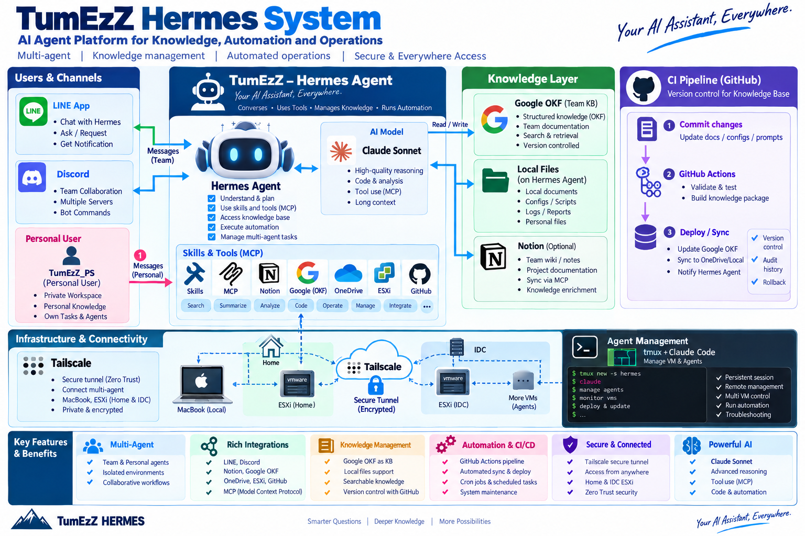

สำรวจโครงสร้างจริงของ Profiles, Skills และ MCP tools บนเครื่องที่รัน Hermes อยู่ พร้อมออกแบบ SKILL.md ของตัวเอง
ls, find, mkdir, text editor เช่น nano
ตัวอย่าง production deployment: Users/Channels (LINE, Discord) → Hermes Agent (Claude Sonnet + MCP tools) → Knowledge Layer (Google OKF, Local Files, Notion) + CI Pipeline (GitHub Actions) บน Tailscale mesh network — ใช้เป็น reference เทียบกับโครงสร้างที่สำรวจใน step ถัดไป
ลองรันคำสั่งนี้ผ่าน terminal (ถ้าคุณกำลังคุยกับ Claude Code/Hermes อยู่ ให้ขอให้มันรันคำสั่งนี้ให้ หรือรันเองถ้ามี shell access):
find ~/.hermes -maxdepth 3 -type d 2>/dev/null | head -30คำสั่งนี้ปลอดภัย (read-only, จำกัดความลึกแค่ 3 ระดับ) และจะโชว์โครงสร้างโฟลเดอร์ระดับบนของ Hermes เช่น profiles/, skills/, memories/, cron/
~/.hermes/profiles/<ชื่อ profile>/ อย่างน้อยหนึ่งรายการ หรือ ~/.hermes/skills/ ถ้าเป็น default profile — จดชื่อ profile ที่เจอไว้
เลือก profile ที่เจอจาก Step 1 แล้วดูรายละเอียดของ skills ที่มีอยู่:
# แทน <profile> ด้วยชื่อ profile จริงที่เจอ (หรือข้าม path profiles/<profile> ถ้าใช้ default profile)
find ~/.hermes/profiles/<profile>/skills -maxdepth 2 2>/dev/null
# หรือ default profile
find ~/.hermes/skills -maxdepth 2 2>/dev/nullสังเกตว่าแต่ละ skill เป็นโฟลเดอร์ที่มีไฟล์ SKILL.md อยู่ข้างใน และบางตัวมี subfolder references/, templates/, หรือ scripts/ เพิ่ม
เปิดไฟล์ SKILL.md ของ skill ใดก็ได้ที่เจอ แล้วสังเกต frontmatter (YAML ระหว่าง ---) กับ body:
cat ~/.hermes/profiles/<profile>/skills/<skill-name>/SKILL.md
# หรือใช้ text editor เช่น
nano ~/.hermes/profiles/<profile>/skills/<skill-name>/SKILL.mdตรวจดูว่า description field ขึ้นต้นด้วยประโยคที่บอก trigger condition ชัดเจน (เช่น "Use when...") และมี behavior สั้นๆ ต่อท้าย
name และ description ของ skill ที่เปิดดูคืออะไร และ description ยาวกี่ตัวอักษร (ควรสื่อ trigger ได้ภายใน ~57 ตัวอักษรแรก)
เลือก use case จริงจากงาน presale หรือ engineering ของคุณเอง (เช่น "การเตรียม proposal", "การ deploy ESXi lab", "การเขียน incident report") แล้วออกแบบ skill ตาม template ด้านล่าง:
---
name: my-presale-proposal-skill
description: Use when preparing a customer proposal for NTT presales engagements. Structures scope, pricing tiers, and technical assumptions consistently.
version: 1.0
---
# My Presale Proposal Skill
## When to use
Use this skill when a presale engineer needs to draft a customer-facing
technical proposal that must follow NTT's standard structure.
## Routing table
| Situation | Action |
|-------------------------------------|----------------------------------|
| New proposal from scratch | Use templates/proposal.md |
| Revising existing proposal | Diff against previous version |
| Pricing needs approval | Escalate via clarify tool |
## Steps
1. Gather customer requirements and constraints
2. Fill templates/proposal.md section by section
3. Validate pricing tiers against references/pricing-rules.md
4. Review with imperative checklist before sending
## Pitfalls
- Never quote pricing without checking references/pricing-rules.md first —
stale pricing causes contract disputes.
- Always confirm scope boundaries explicitly — ambiguous scope is the
#1 cause of scope-creep escalations in past engagements.
สร้างไฟล์จริงด้วย terminal:
mkdir -p ~/my-skill
nano ~/my-skill/SKILL.md
# วางเนื้อหา template ด้านบน (แก้ name/description ให้ตรงกับ use case จริงของคุณ) แล้ว save (Ctrl+O, Enter, Ctrl+X)head -6 ~/my-skill/SKILL.md
# ควรเห็น --- ... name: ... description: ... version: ... ---ถ้า skill ของคุณซับซ้อนพอที่จะมี routing table (เช่น step 4 ข้างบน) ให้แยกไฟล์เสริมออกจาก SKILL.md หลัก เพื่อไม่ให้ main file ยาวเกินไป:
mkdir -p ~/my-skill/references ~/my-skill/templates
# ตัวอย่าง: ย้าย pricing rules ยาวๆ ไปไว้ที่ reference แยก
nano ~/my-skill/references/pricing-rules.md
nano ~/my-skill/templates/proposal.mdหลักการ: SKILL.md ควรสั้น กระชับ พอที่จะโหลดเข้า context ได้เร็ว ส่วนรายละเอียดยาวๆ (เช่น ตาราง pricing เต็ม, ตัวอย่างเอกสารยาว) ให้แยกเป็นไฟล์ reference ที่โหลดเฉพาะเมื่อจำเป็นจริงๆ
find ~/my-skill -type f ควรเห็นอย่างน้อย SKILL.md + 1 ไฟล์ใน references/ หรือ templates/
กลับไปดู section Pitfalls ใน SKILL.md ที่เขียนไว้ใน Step 4 แล้วถามตัวเองว่า:
ถ้าเจอ pitfall ที่เขียนเป็น log ให้แก้เป็น rule ทั่วไปที่ใช้ได้กับทุก use case ในอนาคต ไม่ใช่แค่เหตุการณ์เดียว
เข้าใจ pattern การเรียก deferred tools โดยลองไล่ scenario สมมุตินี้ (ไม่ต้องรันจริง เป็น mental exercise):
สถานการณ์: คุณต้องการส่งข้อความแจ้งเตือนไปที่ Discord channel หนึ่ง
แต่ tool ส่ง Discord message ไม่ได้อยู่ใน default tool list
Step 1: tool_search({queries: ["send discord message"]})
→ ได้ชื่อ tool กลับมา เช่น "discord_send" (ยังไม่รู้ parameter)
Step 2: tool_describe({names: ["discord_send"]})
→ ได้ full JSON schema พร้อม parameter ที่ต้องใส่
Step 3: tool_call({calls: [{name: "discord_send", arguments: {...}}]})
→ เรียกใช้งานจริงสาเหตุที่เป็นไปได้:
find / -maxdepth 4 -iname "*hermes*" -type d 2>/dev/null (อาจช้าและต้องรอสักครู่)ปัญหาที่พบบ่อย:
--- ปิดท้าย frontmatter (ต้องมีทั้งเปิดและปิด)description มีเครื่องหมาย : อยู่ในข้อความโดยไม่ quote — YAML จะตีความผิด ให้ครอบด้วย "..."ตรวจสอบเร็วๆ ด้วย Python ถ้ามี:
python3 -c "
import re
content = open('$HOME/my-skill/SKILL.md').read()
fm = content.split('---')[1]
print(fm)
"ใน lab นี้คุณได้สำรวจ (หรือจำลอง) โครงสร้างจริงของ Hermes profile/skills directory, เข้าใจความแตกต่างระหว่าง memory กับ skills ในทางปฏิบัติ, และเขียน SKILL.md ของตัวเองที่มี frontmatter ถูกต้องตาม format ที่ใช้จริง พร้อมฝึกหลักการ "write lessons, not logs"
ต่อยอด:
delegate_task เพื่อให้ subagent ทดสอบใช้ skill ของคุณ แล้วดูว่า self-report ตรงกับสิ่งที่เกิดขึ้นจริงหรือไม่ (verify ด้วย evidence เสมอ ตามที่เรียนใน slides)